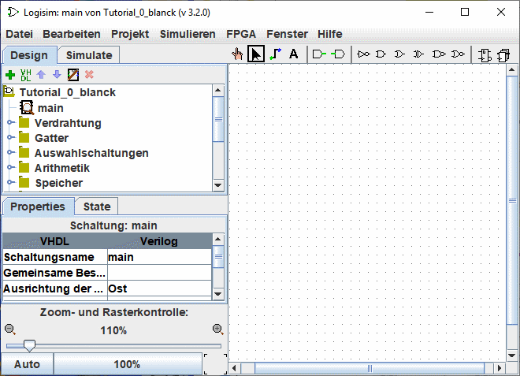
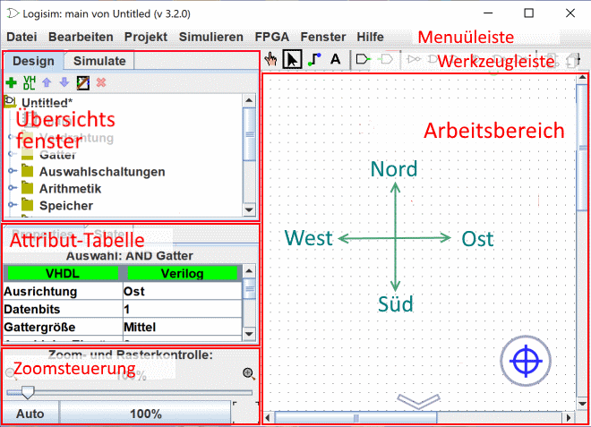

Früher: Beginner's tutorial
Schritt 0: Finden Sie sich zurecht
Wenn Sie Logisim starten, werden Sie ein Fenster wie das folgende sehen. Auf einem anderen Computersystem kann das Fenster etwas anders aussehen.

Das Programmfenster von Logisim ist in drei Bereiche gegliedert: das Übersichtsfenster, die Attribut-Tabelle und die Arbeitsbereich. Über diesen drei Bereichen befindet sich die Menüleiste und die Werkzeugleiste.

In dieser Einführung werden wir noch nicht auf das Übersichtsfenster und auch nciht auf die Attribut-Tabelle eingehen. Bis auf Weiteres können Sie diese beiden Bereiche einfach ignorieren. Und die Menüleiste sollte eigentlich selbsterklärend sein.
Somit bleiben und hier die Werkzeugleiste und die Arbeitsfläche. Der Arbeitsbereich ist die Fläche, auf der Sie Ihre Schaltung zeichnen werden, und die Werkzeugleiste enthält alle Werkzeuge, die Sie hierfür benötigen.
Weiter: Schritt 1: Gatter hinzufügen